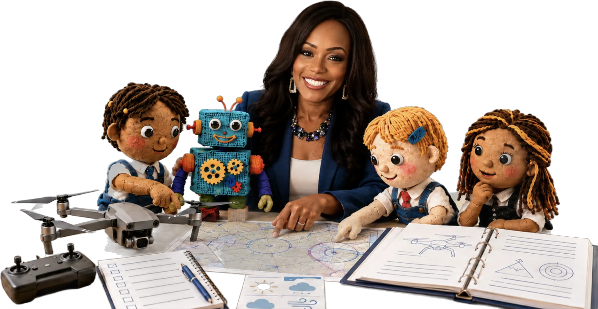

Check Before You Share
Students compare an AI-generated Art Club invitation with approved facts, correct an unsupported detail, explain AI help, and request teacher review.
Public lesson sample · PDF
View Sample Lesson (PDF, opens in a new tab)Lesson samples • Leadership guides • Planning tools
Download free lesson samples, a school leaders’ guide, and planning tools. Schools and districts can request the full curriculum and educator materials.

Free to explore: These samples show real student-facing pages from Future Ready AI. Schools and districts can request the full curriculum and educator materials.
Core Curriculum Samples
Each preview offers a brief look inside the learning experience for AI Discoverers, AI Explorers, and AI Innovators. Schools and districts can request the full curriculum and educator materials.
Students compare an AI-generated Art Club invitation with approved facts, correct an unsupported detail, explain AI help, and request teacher review.
Public lesson sample · PDF
View Sample Lesson (PDF, opens in a new tab)
Students compare a video claim with dated sources, identify missing evidence, and explain a responsible share, check, or stop decision.
Public lesson sample · PDF
View Sample Lesson (PDF, opens in a new tab)
Students investigate a community need, compare solutions, define human review and safeguards, and defend a prototype with a next-test plan.
Public lesson sample · PDF
View Sample Lesson (PDF, opens in a new tab)A Grades 3–5 student lesson and a Grades 9–12 lesson overview extend the samples above. Complete classroom packages are provided to partner schools.
A free Grades 3–5 student lesson exploring patterns, classification, and machine-learning concepts — a longer companion to the Check Before You Share sample above.
A Grades 9–12 case-based flagship lesson. The one-page overview is public; the complete lesson package is provided to partner schools. Students investigate a fictional AI-supported internship recommendation system, examining its purpose, the information it uses, who may be affected, what may be missing or unfair, and where human review is required.
Students will:
Specialty Program Previews
Focused previews of Future Ready AI's career-connected and entrepreneurship extensions. Full modules remain available on request.

A six-lesson Grades 9–12 applied module covering problem discovery, stakeholder research, AI fit, value proposition, responsible innovation, prototyping, and an evidence-based pitch. This sample shows one task; schools and districts can view module details or request the complete module.
Public module preview · PDF
View Sample Lesson (PDF, opens in a new tab)Career-connected curriculum previews linking responsible AI literacy to the UAS workforce.


School Leadership and Planning Resources
Practical tools for school and district leaders evaluating or launching a responsible AI literacy pilot.
A practical starting point for school and district leaders planning responsible AI literacy, Grades 3–12: purpose, curriculum pillars, leadership responsibilities, readiness, and a proposed 90-day pilot plan.
A two-page companion to the School Leaders’ AI Literacy Guide for planning a focused pilot: learning goal and scope, responsibility and safeguards, preparation and evidence, and a documented decision to revise, stop, or expand.
Open the Pilot Planning Handout (PDF) →A concise overview of Future Ready AI's high school pathway, responsible AI literacy competencies, curriculum strands, flagship lesson, school and district support options, and practical pilot model.
Open the Opportunity Brief (PDF) →Explore flexible professional learning for educators, school leaders, instructional teams, technology leaders, and CTE programs. Offerings address AI literacy, responsible use, privacy, bias, academic integrity, curriculum integration, leadership readiness, and implementation support.
Open Professional Learning Offerings (PDF) →A planning tool that helps leadership teams identify strengths, gaps, and next steps across ten areas of responsible AI readiness: leadership and vision, governance, educator readiness, student AI literacy, curriculum integration, approved tools, privacy, equity, family communication, and continuous improvement.
Use the interactive online version to complete the assessment digitally, or download the PDF for team discussion, facilitated planning, or offline use. Submitted information is used only to review readiness needs and respond to requested follow-up — please do not submit confidential student information.
Complete the Online Assessment →Explore More
Explore the Grades 3–12 curriculum, professional-learning options, and school implementation support available through Future Ready AI.